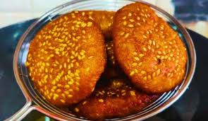

Arsa Recipe

Ingredients:
- 2 cups rice flour
- 1 cup water
- 1 cup jaggery (or brown sugar), grated
- 1/2 cup ghee (clarified butter)
- 1/2 teaspoon cardamom powder
- Oil for deep frying
Procedures:
- In a mixing bowl, combine rice flour and water to make a smooth batter. Ensure there are no lumps. Let it sit for at least 30 minutes.
- In a separate pan, melt the jaggery with a small amount of water over low heat to make a thick syrup. Allow it to cool slightly.
- Add the jaggery syrup to the rice flour batter and mix well to form a consistent batter. Stir in the cardamom powder.
- Heat oil in a deep frying pan over medium heat.
- Once the oil is hot, pour a small ladleful of the batter into the oil, shaping it into a small round pancake.
- Fry the arsa until they turn golden brown on both sides. Make sure to fry them on medium heat so they cook evenly.
- Remove the fried arsa from the oil and drain them on paper towels to remove excess oil.
- Serve the arsa warm or at room temperature. Enjoy your delicious Nepali sweet treat!
Comments: